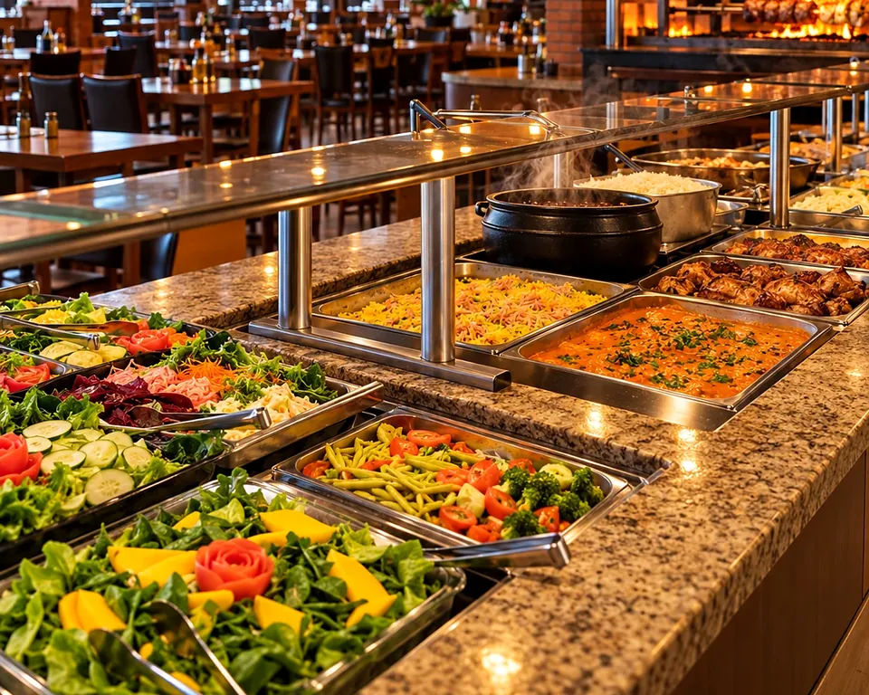
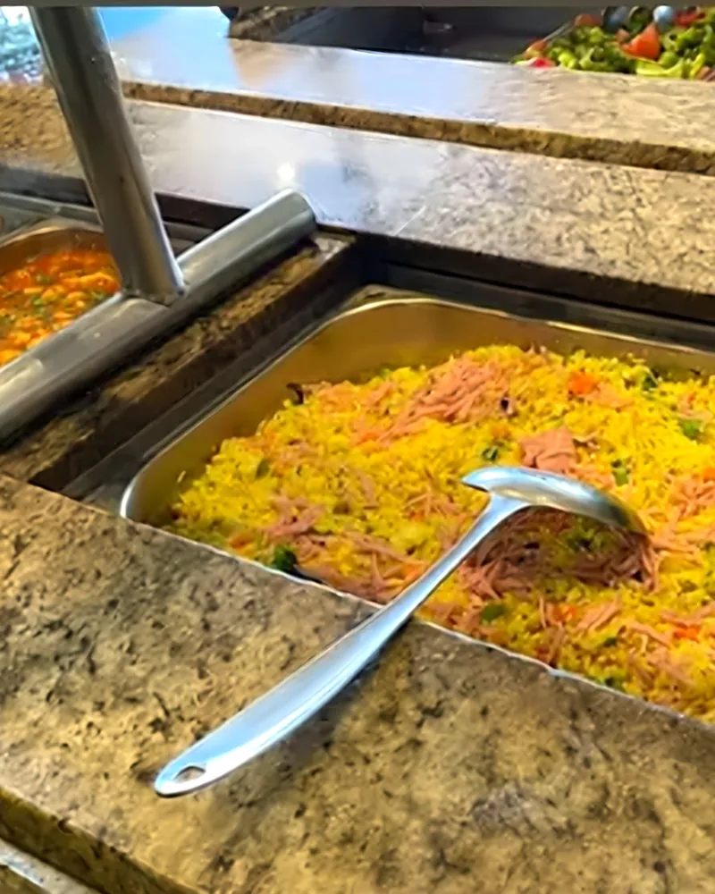
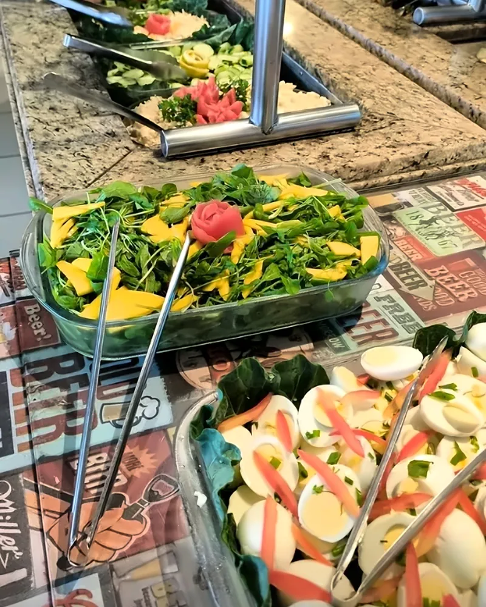
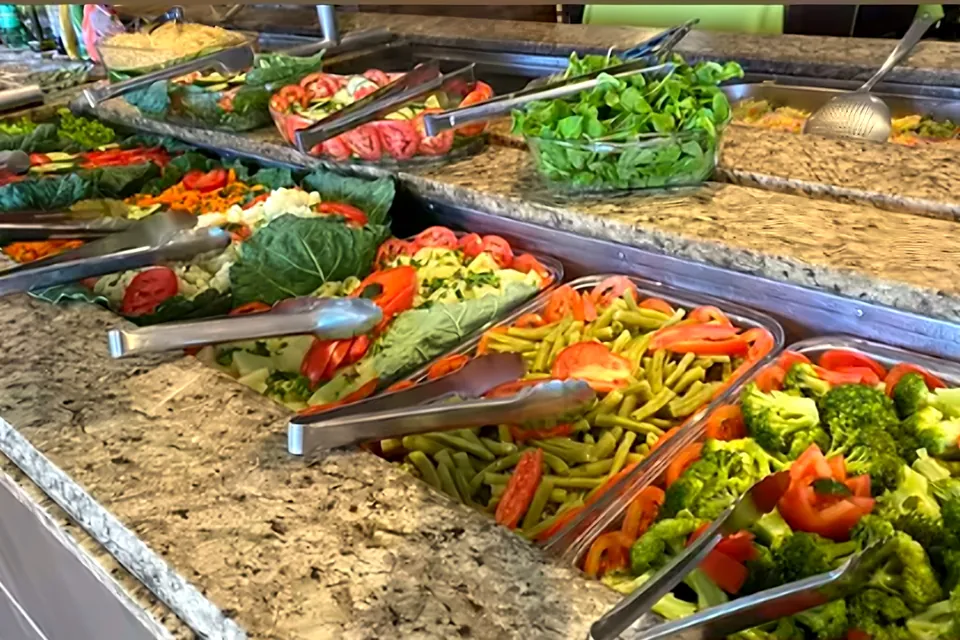
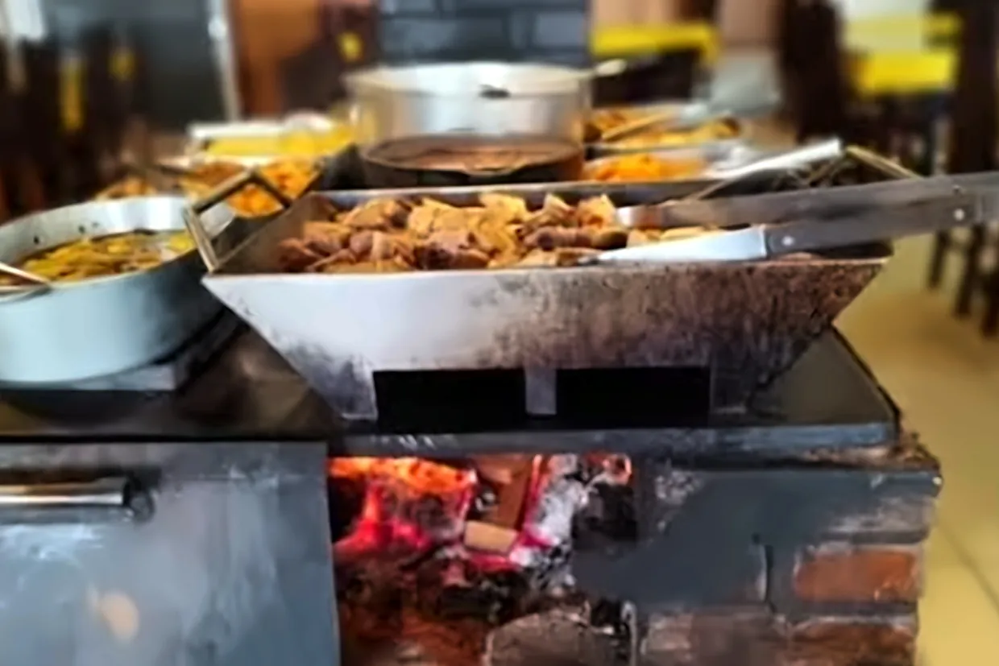
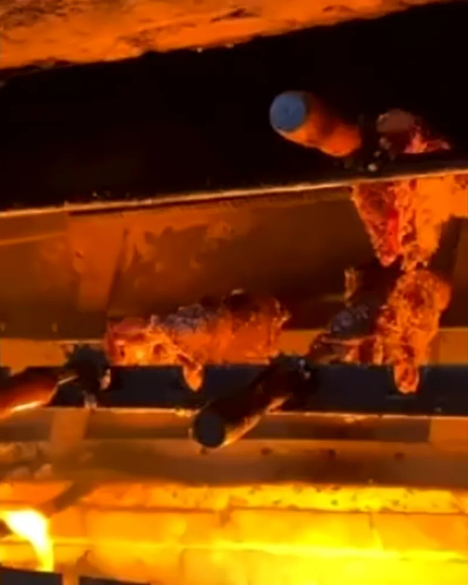

A partir das 06h
Café da manhã
Para começar bem o dia — ou para pegar a estrada de barriga cheia.

Parada do Mano · Cascavel/PR
Buffet variado, comida caseira e churrasco para quem gosta de comer bem.
O restaurante
Café, almoço e janta, de segunda a domingo. Na beira da BR-277, o Parada do Mano recebe quem está na estrada e quem é de Cascavel com buffet completo, comida caseira, fogão a lenha e churrasco.
Abre às 06h fecha às 23h30
A partir das 06h
Para começar bem o dia — ou para pegar a estrada de barriga cheia.
Almoço
Buffet completo, com variedade todos os dias: comida caseira, saladas e pratos quentes.
Até 23h30
Comida caseira também à noite, de segunda a domingo, até 23h30.
O buffet
Buffet completo, com variedade todos os dias: arroz, feijão, pratos quentes, legumes e uma mesa inteira de saladas montadas com capricho. Cada um monta o prato do seu jeito.
Perguntar o buffet de hoje


Buffet livre ou por quilo e os valores do dia: confirme pelo WhatsApp antes de vir.

Churrasco e fogão a lenha
Carne assada no espeto, na churrasqueira, e panela no fogão a lenha. Fogo de verdade, do jeito que a casa divulga: bom churrasco, bons momentos.
Ver o espeto corrido
Aos domingos
Rodízio aos domingos, com variedade de carnes passando na mesa direto da churrasqueira.
Valor do rodízio sob consulta
Consultar valor e horárioDia especial
Quarta e sábado têm feijoada no Parada do Mano. Pergunte pelo WhatsApp o que acompanha e os valores do dia.
Consultar a feijoadaGaleria
Fotos do Parada do Mano, tiradas das publicações da casa: o buffet, a churrasqueira, o fogão a lenha e a fachada na beira da BR-277.
Contato e localização